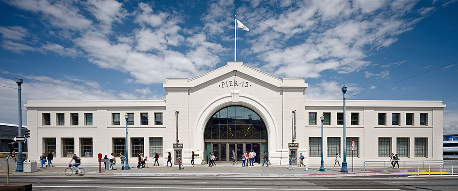

This website is under construction. One day, it will be a beautiful shining star. Until then, please enjoy watching it form from the gases html and css.
Hello
I <3 Allison Barcelon
My name is Steven Traversi and I am a prospective Computer Science major at the University of California, Berkeley. One day I hope to live in San Francisco. Eventually. It's nice and foggy much of the time.

Steven's gon work here!
Working at the Exploratorium is very fun. If I was ever offered a job there, I would definitely jump at the opportunity. While I was working there, I'd also incubate some sort of project or something that I could get off the ground eventually. Or today!
Testing Testing Testing Testing Testing Testing Testing
I like to call all of these boxes the "box waterfall" or "boxes waterfall" because it sort of looks like that when you scroll around and such. Skroll around and such. Skrill around and sux. Skrillex